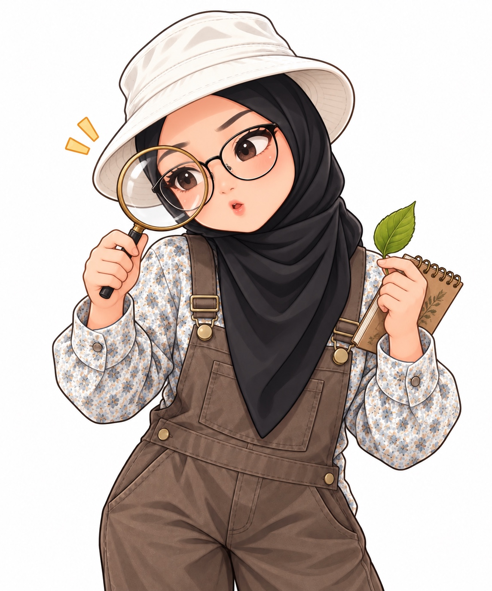

🫁 Misi Nafas Ajaib ✨ AR SainsSains Tahun 4 · SK 2.1Putar model dengan jari atau tetikus. Gunakan butang untuk meneroka.
⊕

Hai, Penjelajah Cilik! 👋
Saya Cikgu Penjelajah! Hari ini kita akan belajar bagaimana manusia bernafas. Jom teroka bersama-sama!
Kenali organ pernafasan
Tekan nama organ untuk mendengar penerangan.
🫁 Peparu Realistik — 3D
Model Sketchfab oleh neshallads. Putar dan zum model. Paparan ini ialah 3D terbenam, bukan model yang diletakkan pada meja melalui AR.
Kredit: Realistic Human Lungs by neshallads on Sketchfab. Penggunaan tertakluk pada syarat Sketchfab dan pemilik model.